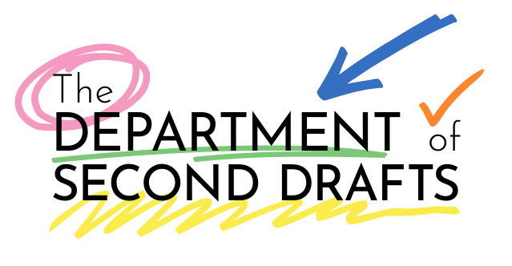

The Department of Second Drafts
Welcome! You're one of the very first to have found us. We promise there's much more to come for storytellers of all types.
– The Department

Welcome! You're one of the very first to have found us. We promise there's much more to come for storytellers of all types.
– The Department
